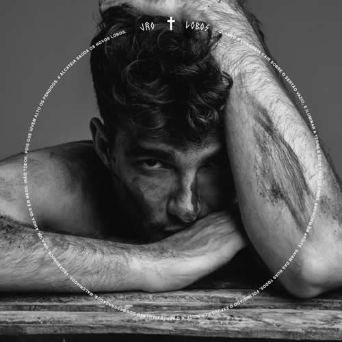
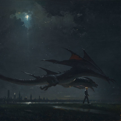

Jão, nome artístico de João Vitor Romania Balbino, é um cantor e compositor, se consolidou como um dos principais nomes do pop brasileiro, conhecido por suas letras emocionantes e estilo marcante.
lançou os álbuns Lobos (2018), Anti-Herói (2019), Pirata (2021), Super (2023) e, em 2024, Supernova, uma edição expandida de Super. Em 2026, iniciou uma nova fase com Memórias Póstumas, seu quinto álbum de estúdio, que faz uma homenagem ao seu falecido pai.

Lobos (2018) 🌱 – Álbum de estreia que fala sobre amor, inseguranças e descobertas da juventude.
Anti-Herói (2019) 🌬️ – Aborda relacionamentos, saudade e amadurecimento, mostrando um lado mais vulnerável do cantor.
Pirata (2021) 🌊 – Fala sobre recomeços, autoconhecimento e superação de términos e dificuldades.
Super (2023) 🔥 – Representa força e renascimento, encerrando a série dos quatro elementos.

Supernova (2024) ✨ – Versão expandida de Super, com músicas inéditas que concluem essa era.
Memórias Póstumas (2026) 📖 – Marca uma nova fase da carreira, com letras mais maduras sobre luto, amor e recomeços.